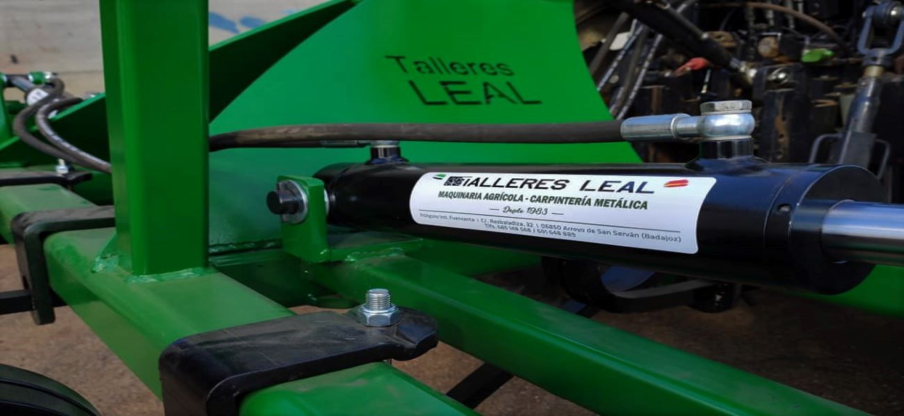
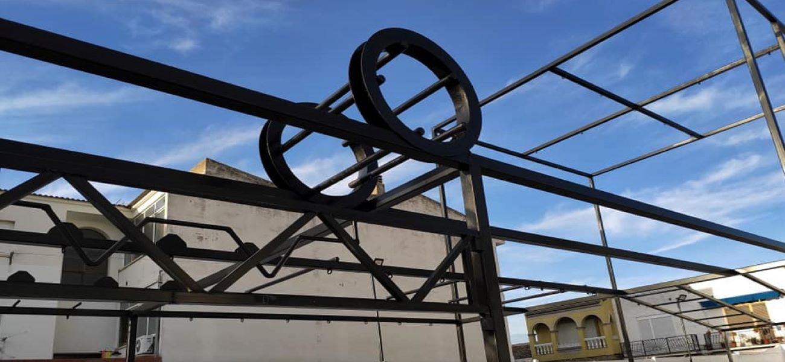
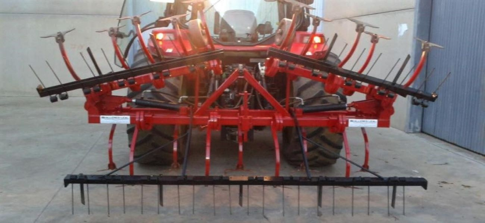

<div class="container slider">
  <div id="myCarousel" class="carousel slide carousel-fade" data-ride="carousel">
      <!-- Indicators -->
      <ol class="carousel-indicators">
          <li data-target="#myCarousel" data-slide-to="0" class="active"></li>
          <li data-target="#myCarousel" data-slide-to="1"></li>
          <li data-target="#myCarousel" data-slide-to="2"></li>
      </ol>

      <!-- Wrapper for slides -->
      <div class="carousel-inner">

        <div class="carousel-item active center">
            
            <div class="carousel-caption">
                <h2>Cultivador hidráulico</h2>
            </div>
        </div>

        <div class="carousel-item center">
          
          <div class="carousel-caption">
              <h2>Estructuras metálicas</h2>
          </div>
        </div>

        <div class="carousel-item center">
          
          <div class="carousel-caption">
              <h2>Todo tipo de aperos hidráulicos</h2>
          </div>
        </div>

      </div>
      <!-- Left and right controls -->
      <a class="carousel-control-prev" href="#myCarousel" data-slide="prev">
          <i class="fas fa-chevron-circle-left fa-lg"></i>
          <span class="sr-only">Anterior</span>
      </a>
      <a class="carousel-control-next" href="#myCarousel" data-slide="next">
          <i class="fas fa-chevron-circle-right fa-lg"></i>
          <span class="sr-only">Siguiente</span>
      </a>
  </div>
</div>
